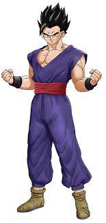
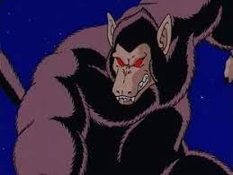
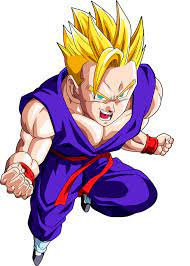
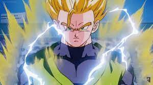
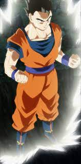
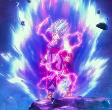

Goku and His Forms

Gohan Base Form
This is Gohan in his base form. For those that don't know, he is actually the Great Saiyaman.

Goku Great Ape Form
Much like Goku he had no idea he could transform like this. Piccilo had quite the mess on his hands.

Goku's Super Saiyan Form
This is Gohan's Super Saiyan Form that he obtained while training with
Goku in the Hyperbolic Time Chamber. As a child he was stronget than Goku in this form.

Goku's Super Saiyan 2 Form
This is Goku's Super Saiyan 2 Form. We do not see him obtain this but he used it in his fight against Vegeta
when Vegeta allowed Babidi to control his mind.

Goku's Super Saiyan 3 Form
Goku's Super Saiyan 3 Form was first seen in his fight against Majin BUu when he was buying time for Trunks.
This form takes up a lot energy and pretty much drained any time left he had on earth. This form is rarely used due to the energy
consumption.

Goku's Super Saiyan God Form
This is Goku's Super Saiyan God Form. This was obtained per the ambition of Beerus as Beerus
was desperate for a challenge. This was obtained by 5 good-hearted saiyans sharing their energy with Goku.